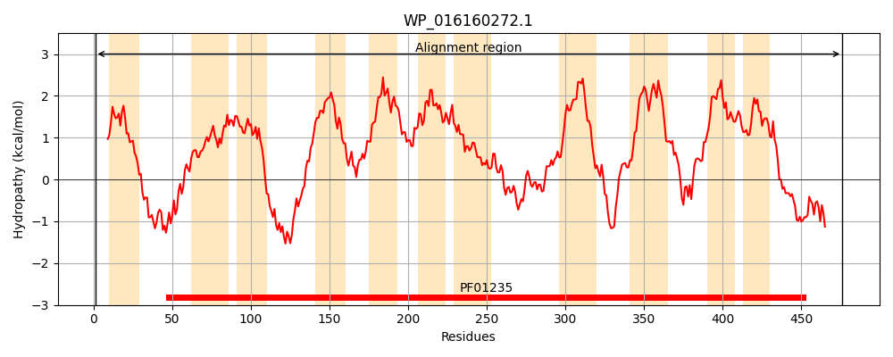
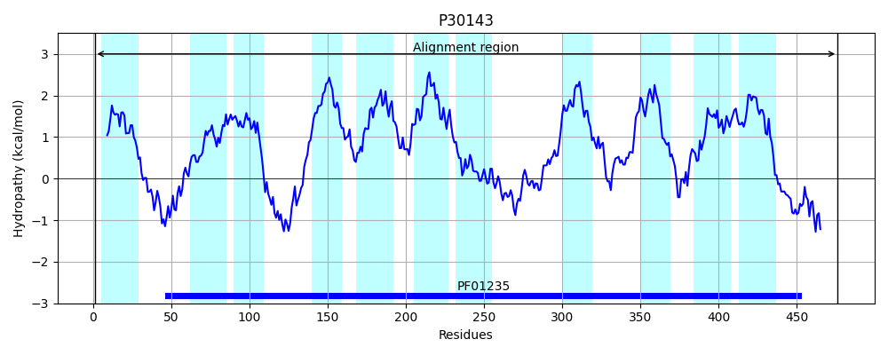
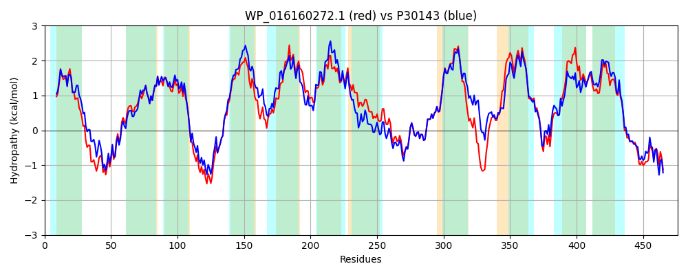

Hit Accession: P30143
Hit TCID: 2.A.25.1.10
Hit Description: gnl|BL_ORD_ID|9708 gnl|TC-DB|P30143|2.A.25.1.10 Uncharacterized transporter YaaJ OS=Escherichia coli (strain K12) GN=yaaJ PE=3 SV=1
Mach Len: 476
e:0.000000
Query TMS Count : 11
Hit TMS Count: 11
TMS-Overlap Score: 10.700000
Predicted Substrates:CHEBI:5460;glycine, CHEBI:2539;alanine
BLAST Alignment:
Score: 1801 , Bit scores: 698 bits, E-value: 0.0e+00, Alignment length: 476, Percentage identity: 70
Query: 1 MPDFLSFINEILWGSVMIYLLLGAGIWFSWQTRGIQFRYVRKFGRSLKKSLHPQPGGLTSFQALCTSLAARVGSGNLAGVTLAIAAGGPGAVFWMWVSALLGMASSFAECSLAQLYKERDSQGQFRGGPAWYMARGLGMRWMGVLFSILLLLAYGFIFNTVQANSVAHALHYAFDLPAAVSGGVLAIFVFLAILRGLRGVARLMQWLVPIMALLWIATSLLIGLWHVTALPTIFATIFRCAFGWQEAAAGAVGYSISQALTSGFQRGMFSNEAGMGSSPNAAAAAASWPPHPAAQGIVQMIGVFIDTIVICTASAIIVMLAPRPDNEYTLNGIQDLQHAMSVLVGGWGADFIALIVLLFAFSSIVANYVYAENNLVFLRLDKPRYIWGLRILTVLMVLLGTLVSLPVVWQSADIIMALMAMTNLTAILLLSPTVRIIASDYLRQRRLGIQPTFDAARYPDIHQQLAPGAWNELPRE 476
MPDF SFIN +LWGSVMIYLL GAG WF+++T +QFRY+R+FG+SLK S+HPQPGGLTSFQ+LCTSLAARVGSGNLAGV LAI AGGPGAVFWMWV+A +GMA+SFAECSLAQLYKERD GQFRGGPAWYMARGLGMRWMGVLF++ LL+AYG IF+ VQAN+VA AL ++FD P V+G +LA+F LAI RGL GVARLMQ VP+MA++W+ TSL+I + ++ LP + +IF AFGWQEAA GA GY++SQA+T+GFQR MFSNEAGMGS+PNAAAAAASWPPHPAAQGIVQMIG+FIDT+VICTASA++++LA L GIQ +Q AM VL+G WGA+F+ L+V+LFAFSSIVANY+YAENNL FLRL+ P+ IW LRI T V+ GTL+SLP++WQ ADIIMA MA+TNLTAILLLSP V IASDYLRQR+LG++P FD RYPDI +QL+P AW+++ +E
Sbjct: 1 MPDFFSFINSVLWGSVMIYLLFGAGCWFTFRTGFVQFRYIRQFGKSLKNSIHPQPGGLTSFQSLCTSLAARVGSGNLAGVALAITAGGPGAVFWMWVAAFIGMATSFAECSLAQLYKERDVNGQFRGGPAWYMARGLGMRWMGVLFAVFLLIAYGIIFSGVQANAVARALSFSFDFPPLVTGIILAVFTLLAITRGLHGVARLMQGFVPLMAIIWVLTSLVICVMNIGQLPHVIWSIFESAFGWQEAAGGAAGYTLSQAITNGFQRSMFSNEAGMGSTPNAAAAAASWPPHPAAQGIVQMIGIFIDTLVICTASAMLILLAGNGTTYMPLEGIQLIQKAMRVLMGSWGAEFVTLVVILFAFSSIVANYIYAENNLFFLRLNNPKAIWCLRICTFATVIGGTLLSLPLMWQLADIIMACMAITNLTAILLLSPVVHTIASDYLRQRKLGVRPVFDPLRYPDIGRQLSPDAWDDVSQE 476 | Protein Hydropathy Plots: |
|---|
|  |  |
Pairwise Alignment-Hydropathy Plot:
|
|---|
|  |